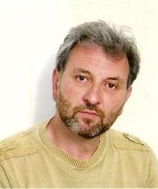

Михаил Львович Либман, композитор Михаил Либман, Sketch, 1980, для кларнета и ф-но. Исполняют Де Чеверия (кларнет), М. Либман (ф-но).
Либман,
Михаил Львович, (13 апреля 1957, Петрозаводск) – российско-израильский
композитор. Член союза композиторов России, член союза композиторов
Израиля. 1972-1976 Петрозаводское музыкальное училище им.К.Э.Раутио.
Класс фортепиано преп.Л.Е.Куцовская, класс композиции
преп.Э.Н.Патлаенко. 1976 по 1981 учился на композиторском отделении
Московской государственной консерватории им.П.И.Чайковского: класс
композиции А.И. Пирумов, инструментовки Ю. А. Фортунатов и теоретическим
дисциплинам Ю. Н. Холопов. 1982-1988 преподаватель Петрозаводской
государственной консерватории. С 1991 года проживает в Израиле.
М. Либман видео Israel Composers' League Произведения М. Л. Либмана на сайте музыкального издательства. ТВОРЧЕСТВО Работает в традиции т.н. «расширенных техник», развивая
возможности конвенциональных инструментов. С 1997 года много работает со
струнными инструментами. Независимо от других авторов обнаружил и
описал мультифоническую технику у альта, виолончели и контрабаса.
Сочинения М.Л.Либмана отмечены премией премьер министра Израиля (2006).
СОЧИНЕНИЯ Соната для тромбона и ф-но (1979) Трио для трубы, ударных и
ф-н (1979) Эскиз для кларнета и ф-но (1980) Оратория, «Калевала» (1981)
Фуга для скрипки (1982) 3 этюда для контрабаса (1982) «Рунопевец»
Фольк-рок опера по эпосу “Калевала” (1982-1987) Концерт для скрипки и
оркестра (1985) «Зеркало Одиночества», мистерия (1987) (первая версия)
«Закулисная музыка», квартет для медных инструментов (1988)
«Калейдоскоп», трио для кларнета, скрипки и ф-но (1989) «Эманации 1» для
квинтета ударных (1991) «Отражения времени» для камерного ансамбля
(1992) «Эманации 2» для камерного ансамбля (1993) Трио для флейты,
кларнета и ф-но (1997) Соната для альта (1997) «Движение Покоя» для
виолончели (1998) Соната для контрабаса (1999) «Генезис» для квартета
духовых и струнных (2002) «Тель-авивские ночи» для гитары (2003)
«Та-ка-та» для флейты (2003) «Слэп» для ф-но (2005) «Зеркало
Одиночества», мистерия (опера-балет) по “Поэме без героя” А.А.
Ахматовой, включая отрывки из сочинений Кузьмина, Мандельштама,
Цветаевой и Пастернака (2000-2011) (вторая версия) «Бинарности» для
струнного оркестра (2013) Оркестровка Баллады Nо.4 Шопена для большого
оркестра (1997) Его сочинения исполнялись на фестивалях: «Альтернатива»,
«Московская осень», «Музыка друзей» в Москве; «Фестиваль русской
музыки» в Тальбурге, Бельгия; «Кфар блюм», «Бьенале» в Израиле;
Фестиваль новой музыки в Винипеге, Канада. Среди известных исполнителей
его сочинений Францез Мари Уитти, Марк Пекарский, Владимир Понькин... НОТНЫЕ ИЗДАНИЯ ליבמן, מיכאלMovement of repose: for cello solo. Tel-Aviv: Israeli Music Center, 1998.
СТАТЬИ-ТЕОРЕТИЧЕСКИЕ РАБОТЫ Michael Liebman. New Sounds for Cello and Double Bass («Новые звуки для виолончели и контрабаса»). Kompozitor Publishers, Moscow, 2010:
http://www.acoustics.asn.au/conference_proceedings/ICA2010/cdrom-ISMA2010/papers/p15.pdf
M. Liebman. Multiphonics Neue Moglichkeiten im Cellospiel (Multiphonics, New Possibilities in Cello Playing), Das Orchester 4, 14—19 (2001).
ЛИТЕРАТУРА (упоминания)Håkon Thelin, Introduction to multiphonics on the double bass techniques
Håkon Thelin A new world of sounds – recent advancements in contemporary double bass techniques
Knut Guettler Håkon Thelin Bowed-string multiphonics analyzed by use of impulse response and the Poisson summation formula
Knut Guettler Håkon Thelin Analysis of Bowed-string Multiphonics
Сайт
Союза композиторов России http://soyuzkompozitorov.ru/structure/moscow.html Московское отделение союза композиторов http://www.xn--b1aanbebkbbpfqcbebcaoyded7a1etm.xn--p1ai/list.htm
|